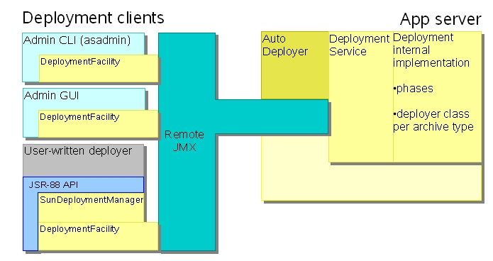
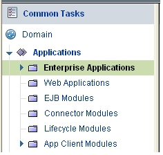

Deployment is the process by which administrators and developers place applications into service within the app server (as in “The deployment of my new application worked!”). Within the GlassFish project the term “deployment” also refers to the code itself that accomplishes this (as in “I am starting to read through the deployment code.”) You will see further distinctions as you explore the process and the code in more detail.
The main purpose of this page is to give you an overall view of how the deployment component is built and to let you know where in the codebase to look for the details of a particular part of deployment. We hope to add more information over time but hope that this gives you a good start if you are interested in learning about deployment and its implementation.
Some of the latest work on deployment has involved annotations and dependency injection, new features in Java EE 5.
Beginning with the GlassFish implementation, remote tools such as user-written deployers do not depend on the large appserv-rt.jar library. Instead, you can run such tools with only the smaller appserv-deployment-client.jar, appserv-ext.jar, javaee.jar, and jmx-remote-opt.jar library jar files.
Because the GlassFish project implements Java EE 5, users can build and deploy applications that have no deployment descriptors!
|
The majority of the GlassFish code is available under the Common Development and Distribution License (CDDL) v1.0 The following page contains details about the components in GlassFish and the licenses under which they are covered. |
The deployment infrastructure has a (possibly) remote client-side part and a server-side part, each of which contains or works with additional components. [Click on areas of the diagram to jump to related descriptions on this page.]

Illustration 1: Architectural Overview of Deployment
Each deployment client communicates with the server using remote JMX messages. The DeploymentFacility component provides an easy-to-use internal API for performing common deployment tasks, relieving the clients themselves from the details of exchanging JMX messaging with the back-end. All deployment clients use the DeploymentFacility.
On the server side, the admin infrastructure receives and interprets the incoming JMX messages and invokes the appropriate method on the DeploymentService (an interface). The PEDeploymentService class implements this interface and responds to each incoming JMX message that related to deployment. It executes the phases that should run for each operation, delegating work to the deployer class tailored to the particular type of module involved in the operation (enterprise app, web app, app client, etc.).
Users can deploy applications in several ways.
Admin CLI – Several commands available
through the command line interface are related to deployment.
deploy – deploys a new application or redeploys a previously-deployed
application
undeploy – removes a previously-deployed application from the app server
get-client-stubs – retrieves the client stubs jar file that was
generated during a previous deployment
deploydir – deploys a new application contained in a directory rather
than an archive file (see Packaging
below)

Illustration 2: Admin GUI Types of Applications
User-written deployer – JSR-88 defines a standard API that tools can use to deploy applications to any app server that complies with the standard (as the GlassFish project does).
Auto-deployment – Users may copy an application's archive file into a known directory which the app server monitors. The app server deploys any new file deposited there, and undeploys any application that was previously auto-deployed if the user removes the file from this directory. The auto-deploy directory is install-path/domains/domain-name/autodeploy.
Custom ant tasks (not illustrated) – The app server also includes several custom ant tasks. Two of these – sun appserv deploy and sun appserv undeploy – allow developers to deploy and undeploy applications. See the Developer's Guide >> Developing and Deploying Applications >> Assembling and Deploying Applications >> asant Assembly and Deployment Tool for more information.
The Java EE and other related specifications describe how archives should be assembled (such as an .ear for an enterprise app, a .war for a Web app, etc.) for deployment to compliant app servers. The GlassFish project honors those formats but also provides for directory deployment, in which users prepare a properly-structured directory which organizes the files that would otherwise be inside an archive. Although an expanded directory like this is more cumbersome to move from one place to another, using directory deployment might be a particularly good approach for certain situations, particularly IDEs. Using directory deployment saves the IDE from having to construct the archive file from the input files, and the app server itself does not need to go through the step of expanding the archive file into its own directory.
One way to understand the directory structure that GlassFish expects is to deploy an application you have packaged as an archive and then look at the directory the app server creates for that application in the app server's install-path/domains/domain-name/applications directory. You will find subdirectories for j2ee-apps (containing a directory for each deployed enterprise app) and j2ee-modules (containing a directory for each deployed Web app). (Note that you should not change the contents of these directories or otherwise depend on their structure. The layout and contents of these directories is private to the GlassFish implementation and could change between releases.)
The general structure of these directories is fairly straightforward. The directory should contain whatever files you would otherwise have included in the archive – in the correct subdirectory – with the exception that any embedded archives (such as a Web app or an application client embedded inside an .ear file) must themselves be expanded. The name of the subdirectory for such sub-modules should be the file name of the archive with the “.” that separates the name from the type replaced with an underscore (“_”). For example, suppose an enterprise app contains an embedded Web app that would normally be packaged inside the .ear archive as myWebApp.war. A directory structure that could be used for directory deployment might look something like this:
top-level-directory
META-INF
application.xml
Manifest.xml
myWebApp_war
index.jsp
META-INF
Manifest.mf
WEB-INF
classes
MyClass.class
Note how the contents of the myWebApp_war subdirectory mirrors the contents you would expect to find in the corresponding Web application archive file.
If you prepare a directory according to these naming conventions, you can use it for directory deployment.
The GlassFish project includes an implementation of the JSR-88 API. This allows any tool that complies with JSR-88 to deploy applications to and undeploy applications from the app server.
The JSR-88 implementation in the GlassFish project exposes several classes to the tool writer. One of the main ones is the SunDeploymentManager which implements the JSR-88 DeploymentManager interface. It bridges the JSR-88 API to the DeploymentFacility shared by all GlassFish project deployment clients. If you are interested in exploring the JSR-88 implementation, this class is a good place to start. It and other classes related to the JSR-88 implementation reside in the appserv-core/src/java/com/sun/enterprise/deployapi branch of the source code repository.
On the server side, deployment is implemented as a sequence of
phases. Each phase tracks the changes it makes in the app server's data
structures and directories so it can roll back those changes in case of
an error during deployment. The classes in
appserv-core/src/java/com/sun/enterprise/deployment/phasing
implement this phased behavior. This table gives an overview of the
phases and their general responsibilities. Consult the source code for
further details.
|
Phase |
Purpose |
|---|---|
|
Configuration |
J2EECPhase – Delegates to appropriate *Deployer classes to handle the specific actions for each type of application. This includes any necessary code generation, for example to support web services. |
|
Associate |
Associates the application being deployed with the target server where it is to actually run. |
|
Pre-resource creation |
Creates resources needed before resource adapter(s) initialization. |
|
RA start |
Starts resource adapter(s). |
|
Post-resource creation |
Creates resources needed after resource adapter(s) initialization. |
|
Start |
Starts the application, loading it into the app server so it is ready to handle incoming requests. |
The deployment code resides in these general areas:
|
Area in the GlassFish project repository |
Deployment content |
|---|---|
|
Elements of deployment shared across more than one component |
|
|
The implementation of the JSR-88 API, a specification for a deployment API that is independent of particular app server implementations |
|
|
appserv-core/src/java/com/sun/enterprise/deployment/client/... |
Client-side implementation of the deployment architecture |
|
Server-side implementation of the deployment architecture |
In addition to running the project-wide QuickLook tests required before any check-in, you should also run the deployment unit tests. Consult the README file in appserv-tests/devtests/deployment for complete instructions for preparing and executing the unit tests.
F.A.Q. about deploying applications in GlassFish
Deployment FAQSpecifications:
JSR-244: Java™
Platform, Enterprise Edition 5 (Java EE 5) Specification
JSR-88: J2EE Application Deployment
JSR-250: Common
Annotations for the Java™ Platform
General information:
Lots of good general information on deployment can
be found in the following documents.
Application
Deployment Guide – describes how to deploy applications
Administration
Guide – see especially the Deploying Applications section
You can find the entire documentation set at the GlassFish project documentation
page.
Presentations/Articles:
Presentation talked about jndi name mapping Component Dependencies and Ease Of Development Improvements in Java EE 5/App Server 9